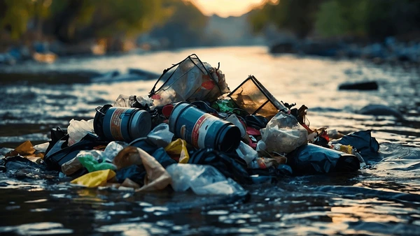

La contaminación ambiental es un fenómeno complejo que afecta a la salud del planeta y de sus habitantes. Se define como la presencia de sustancias nocivas en el medio ambiente, que pueden ser perjudiciales para los seres vivos y el equilibrio de los ecosistemas. Este texto explora las causas, tipos y consecuencias de la contaminación, así como su impacto en la salud pública y el medio ambiente.
La contaminación ambiental es un problema multifacético que requiere atención inmediata y acción coordinada a nivel local, nacional e internacional. La comprensión de sus causas y consecuencias es fundamental para desarrollar políticas efectivas que mitiguen su impacto y promuevan un entorno más saludable para las generaciones futuras. La colaboración entre gobiernos, industrias y ciudadanos es esencial para abordar esta crisis global y proteger nuestro planeta.
Usuario1: Este es un comentario sobre la contaminación.